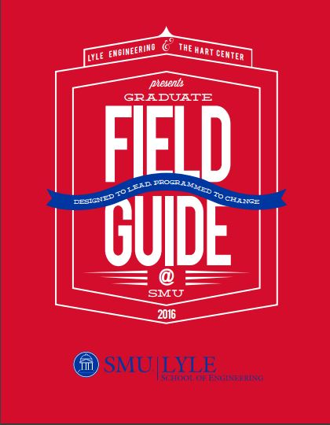

Fields Wicker-Miurin tells stories of remarkable leaders and many times, leaders are found in unlikely people.

A leader's values will be tested at some point.
Quiz on Video #{{ctrl.videoquiz}}
1. What was Fields Wicker-Miurin first occupation?
Curator
Banker
English literature professor
Homemaker
2. Benki, leader of the Ashaninka Nation, became the leader of his people at what age?
18
20
10
16
3. What traits did Benki, Sanghimitra, and Dr. Jianchuan all have in common?
Drive, egotistical, and passion.
Passion, selfishness, and drive.
Commitment, passion, and pessimism.
Drive, passion, and commitment.
4. What can we do to instill leadership attributes in children when they’re young so it can develop and flourish over the years? What can we do for college students? [free-text answer]
5. Do you feel that this video has been helpful in your leadership development journey? [free-text answer]
Curator
Banker
English literature professor
Homemaker
2. Benki, leader of the Ashaninka Nation, became the leader of his people at what age?
18
20
10
16
3. What traits did Benki, Sanghimitra, and Dr. Jianchuan all have in common?
Drive, egotistical, and passion.
Passion, selfishness, and drive.
Commitment, passion, and pessimism.
Drive, passion, and commitment.
4. What can we do to instill leadership attributes in children when they’re young so it can develop and flourish over the years? What can we do for college students? [free-text answer]
5. Do you feel that this video has been helpful in your leadership development journey? [free-text answer]
1. Who was Tufekci’s manager referring to when he asked her, “Can he tell if I’m lying”?
The receptionist
The company mascot
The computer
The water cooler
2. When protests broke out in Ferguson, MO, the news never really showed up on Facebook’s newsfeed for people. Why was Ferguson’s story not algorithm-friendly on Facebook?
Nobody was talking about it.
It was not “likeable”.
FOX news covered it up.
None of these.
3. Whose problem is it when an artificial intelligence system gets things wrong?
Google
Skynet
Nobody
Humans
4. Was there a time when you made a decision based on your values or morals? Would you make the same decision or not and why? [free-text answer]
The receptionist
The company mascot
The computer
The water cooler
2. When protests broke out in Ferguson, MO, the news never really showed up on Facebook’s newsfeed for people. Why was Ferguson’s story not algorithm-friendly on Facebook?
Nobody was talking about it.
It was not “likeable”.
FOX news covered it up.
None of these.
3. Whose problem is it when an artificial intelligence system gets things wrong?
Skynet
Nobody
Humans
4. Was there a time when you made a decision based on your values or morals? Would you make the same decision or not and why? [free-text answer]
Recommended Books
File Guide
